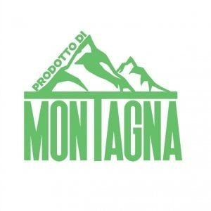
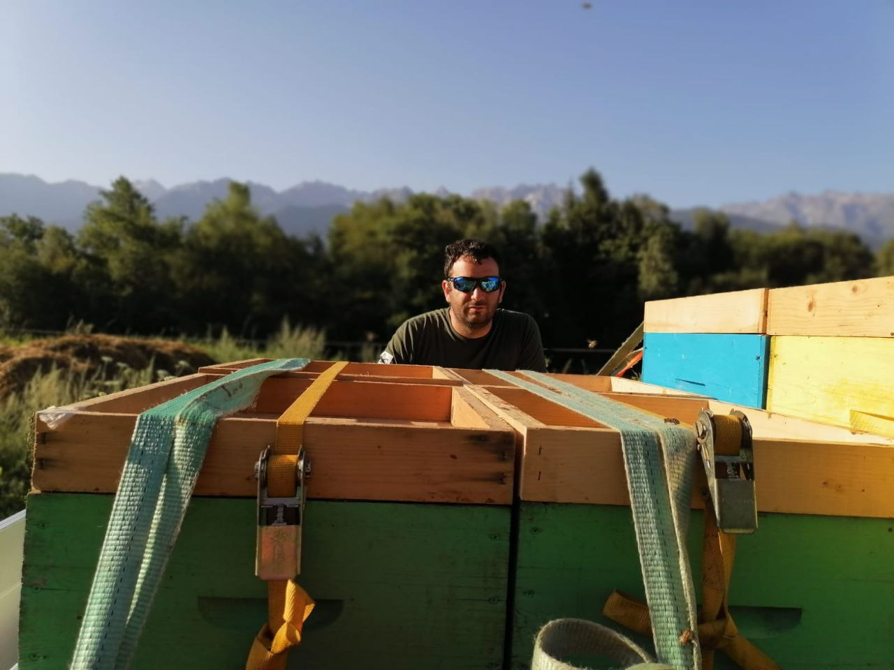
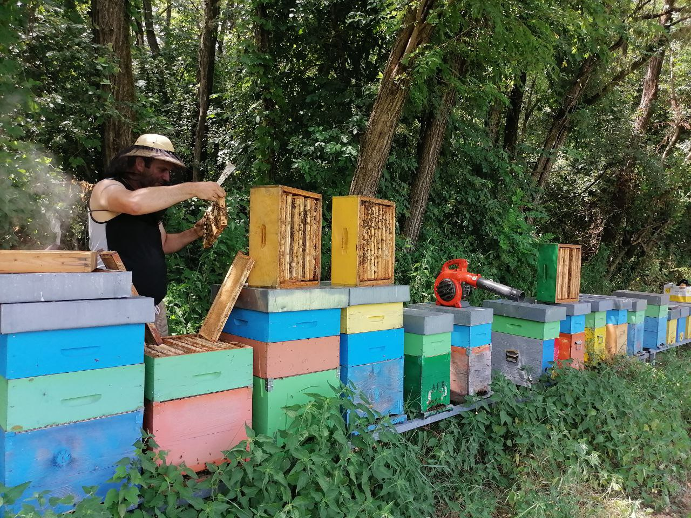
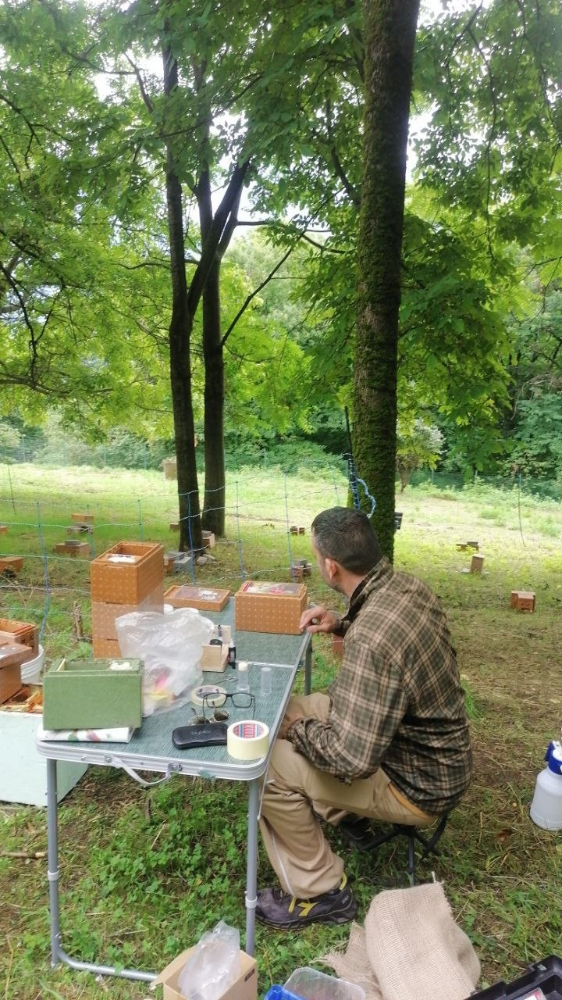
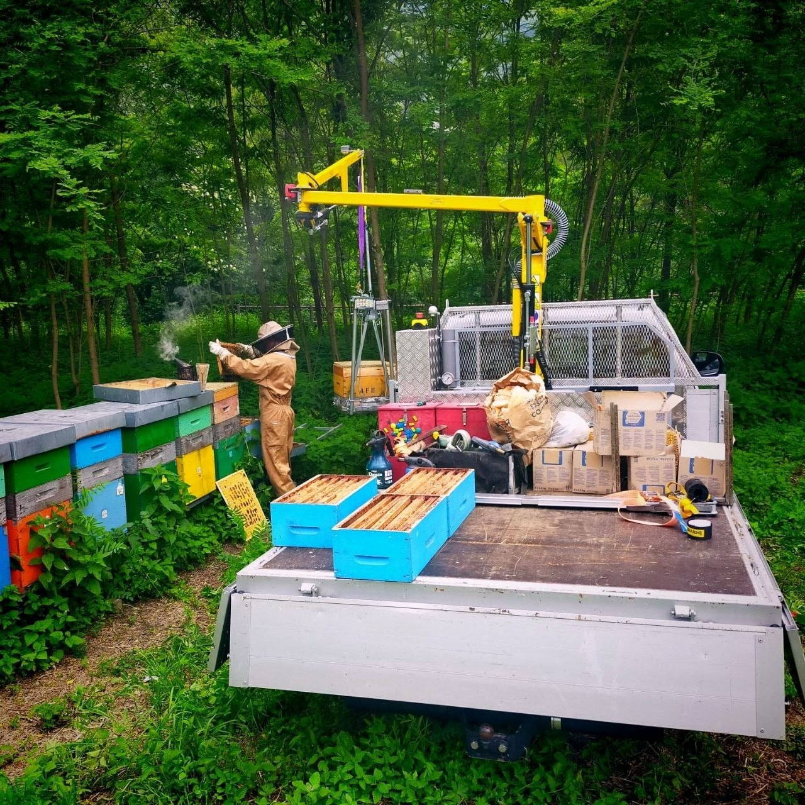
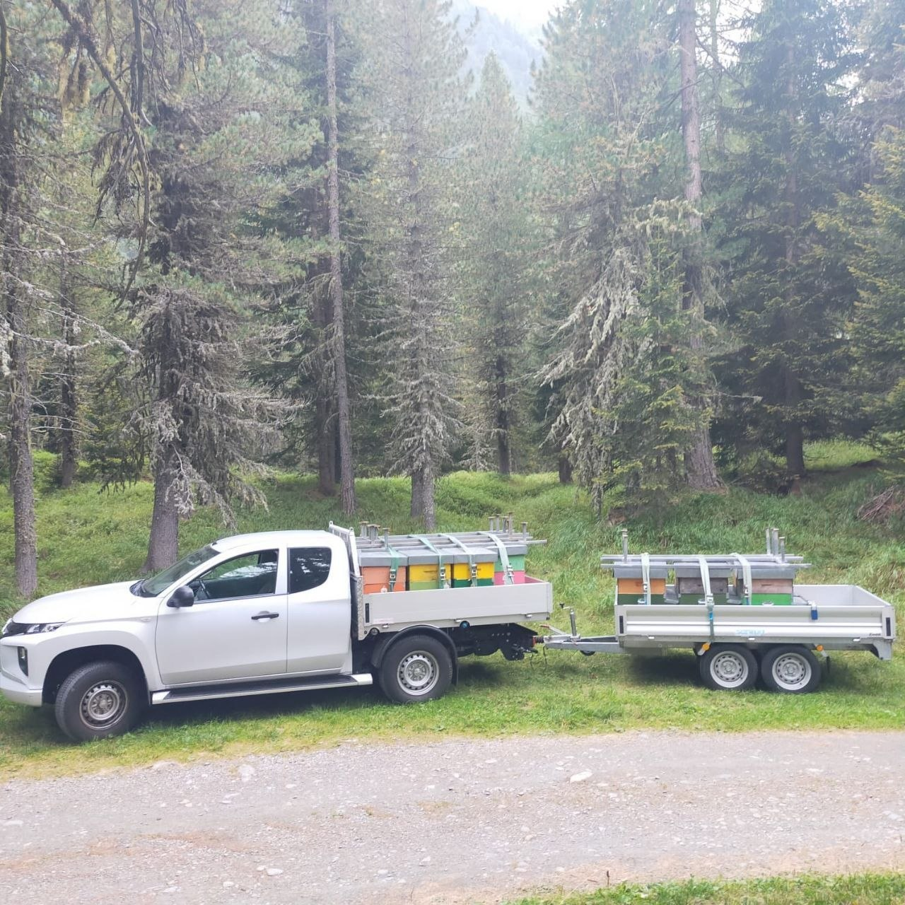
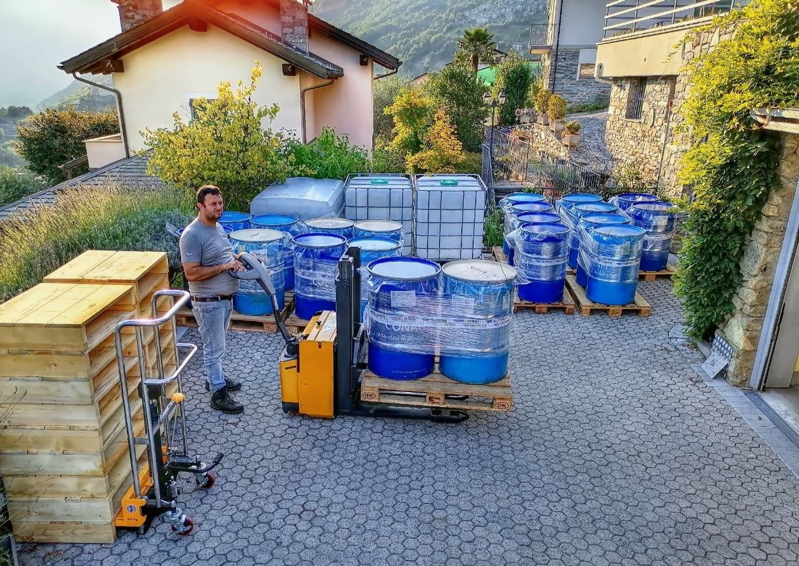
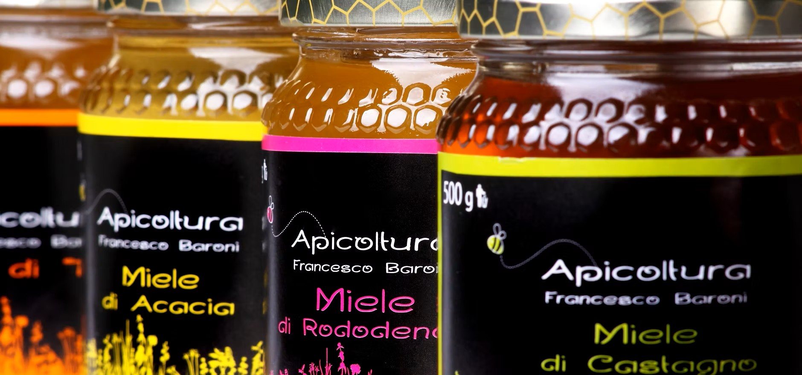

APICOLTURA BARONI FRANCESCO
Esclusivamente da pascoli alpini

Esclusivamente da pascoli alpini
Miele certificato “Prodotto di Montagna”

Sono Francesco Baroni, zootecnico e apicoltore in Valtellina.
Lavoro in un contesto montano, dove clima, fioriture e altitudine danno origine a mieli autentici, legati al territorio.
Sono socio conferitore di CONAPI, principale cooperativa apistica europea.
Il miele è esclusivamente di mia produzione, senza acquisti o miscelazioni di prodotto di terzi.
Francesco Baroni racconta il suo lavoro
Storie di apicoltori — CONAPI
Dalla cura degli alveari alla selezione genetica delle api, fino alla produzione del miele: un lavoro che richiede esperienza, competenza e conoscenza del territorio.

La gestione delle colonie segue i loro cicli biologici e il ritmo delle stagioni, adattandosi alle condizioni dell'ambiente montano.

Francesco è bee breeder e fornisce la linea paterna alla stazione di fecondazione controllata di Val Fraele, a circa 1.950 metri di quota. È inoltre socio di ZAC, associazione austriaca impegnata nella selezione genetica dell'ape carnica.

Il monitoraggio delle famiglie comprende la valutazione dello sviluppo, delle condizioni sanitarie e dell'andamento produttivo, attraverso osservazioni e rilevazioni periodiche.

Gli alveari vengono trasferiti seguendo le fioriture, dal fondovalle ai pascoli alpini, valorizzando le diverse risorse nettarifere della Valtellina.

Il miele è interamente prodotto nei nostri apiari. La maggior parte della produzione viene conferita a CONAPI, cooperativa apistica di cui Francesco è socio conferitore. Una parte è invece confezionata in vasetti per la vendita diretta.
Dalle fioriture primaverili del fondovalle ai pascoli d'alta quota, ogni miele esprime un ambiente diverso.
Acacia, tiglio, castagno, millefiori e mieli alpini: varietà e disponibilità cambiano ogni anno, seguendo il ritmo delle stagioni.
Apicoltura Baroni Francesco
Via Molini 10
23026 Ponte in Valtellina (Sondrio)
Partita IVA 00843770140
